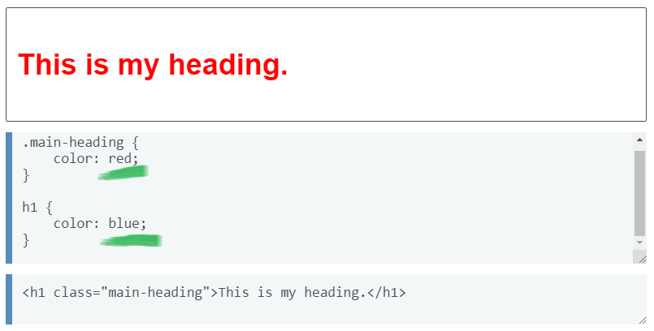
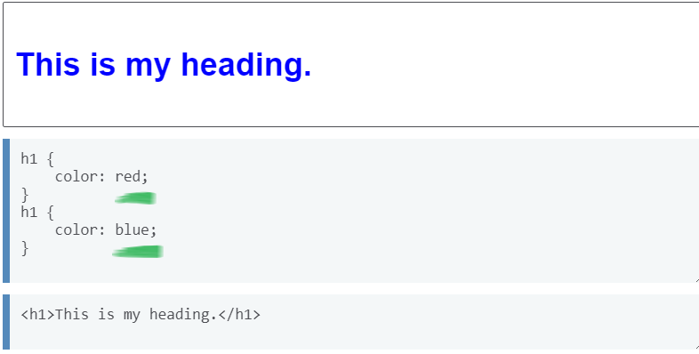
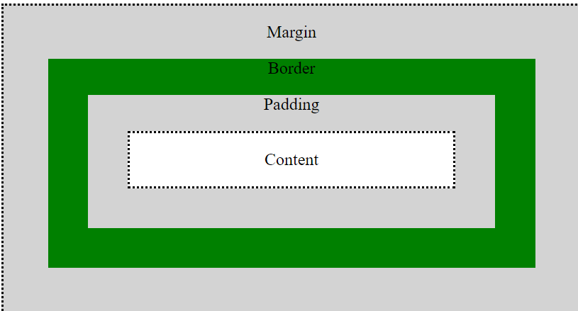
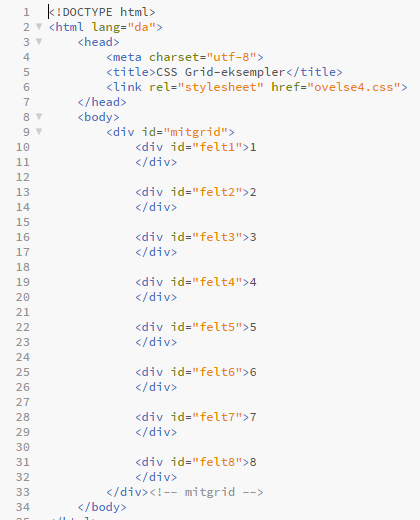
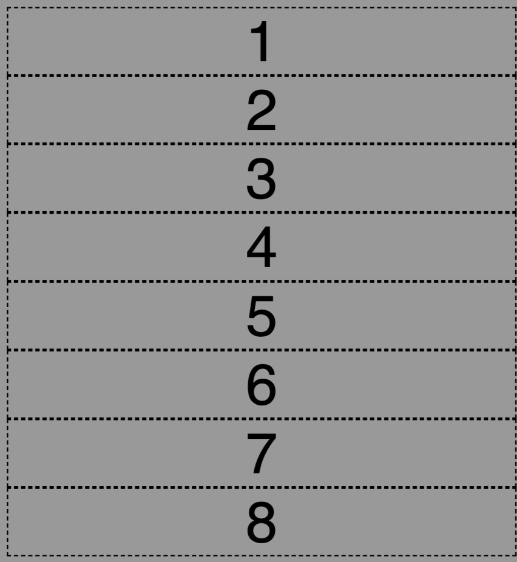
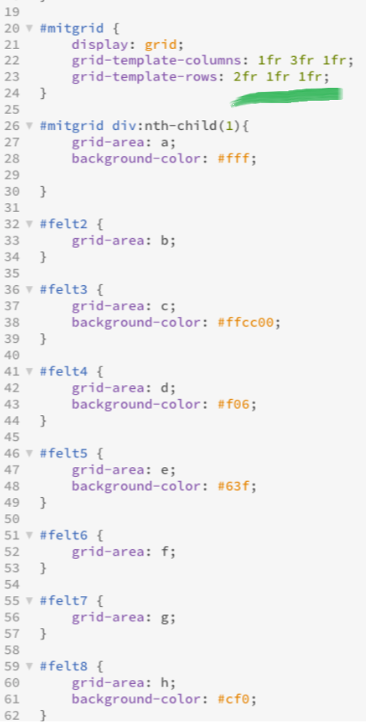
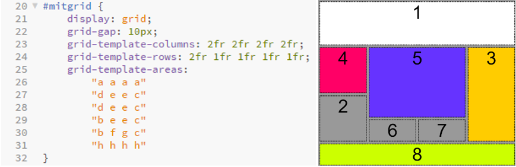
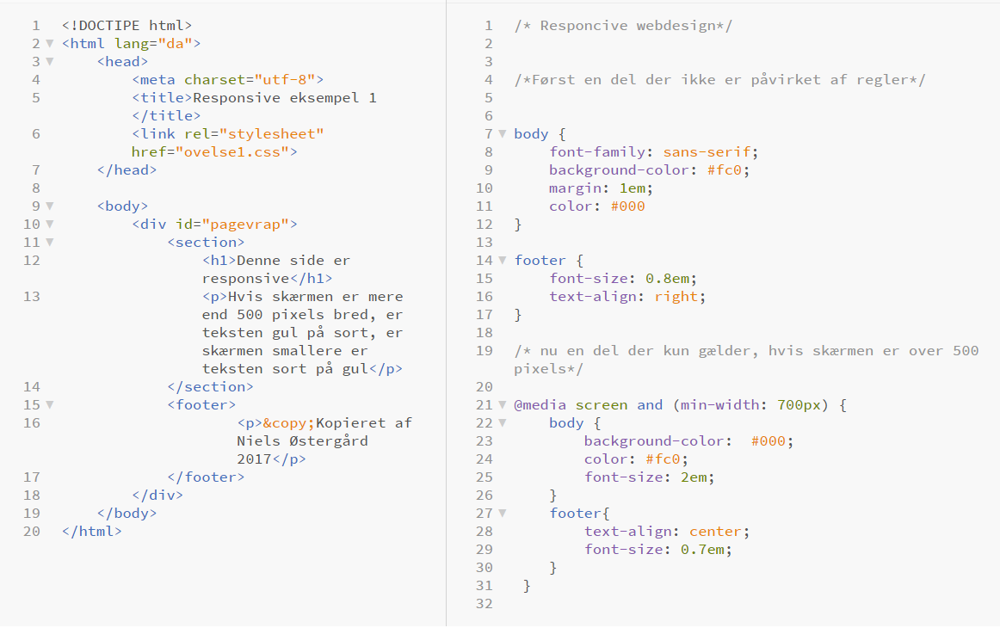
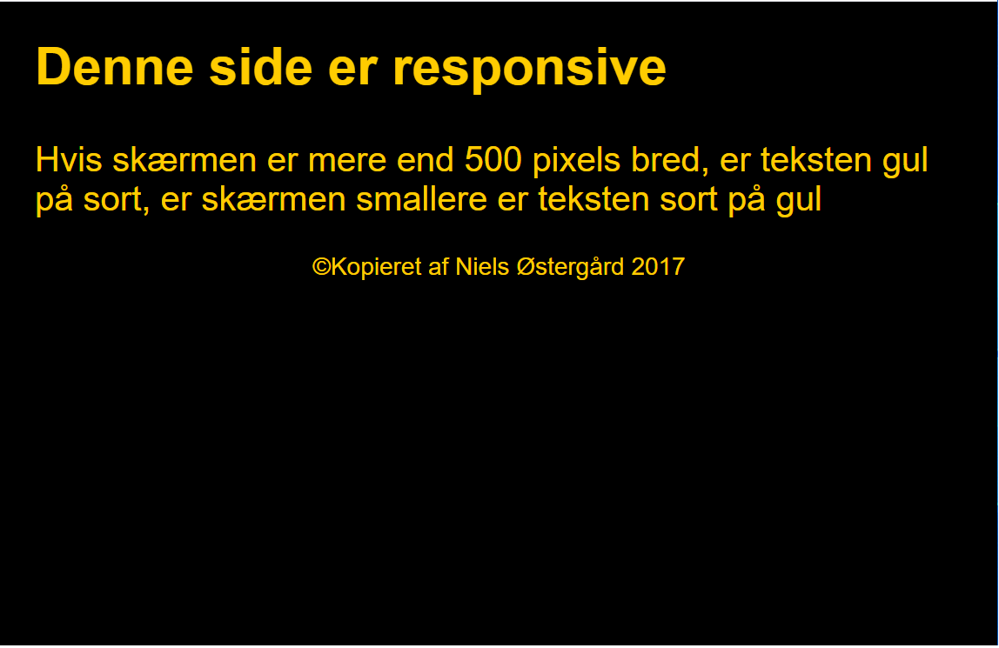
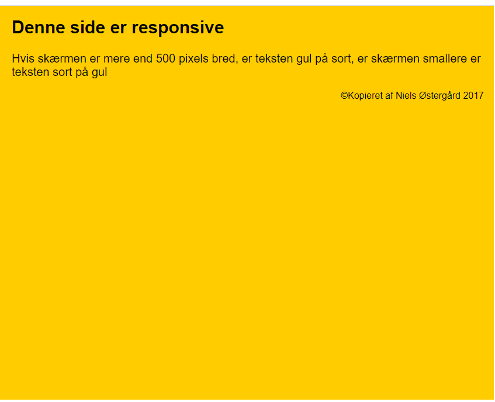

Css står for Cascading Style Sheets. Det er et sprog, der beskriver en udseende af en HTML fil.
Color og background
Sådan ser det ud i praksis, hvis jeg vil lave om på baggrundsfarven på min side:
body {background-color: #EEE;}
Sådan gør man, hvis man vil style alle sine overskrifter i en farve:
h1 {color: lightblue;}
Man kan også style baggrunden af sin side med et billede, i stedet for en farve:
body {background-image: url (”baggrundsbillede.jpeg”);}
Hvis billedet ikke er stort nok til at fylde hele det område du ønsker det skal fylde, kan du evt. gentage billede. Her har du følgende muligheder:
background-repeat: repeat-x – (billedet gentages horisontalt)
background-repeat: repeat-y – (billedet gentages vertikalt)
background-repeat: repeat – (billedet gentages både horisontalt og vertikalt)
background-repeat: no-repeat – (billedet gentages ikke)
“Background-position:” bruges til at placere baggrundsbilledet på specifikke steder.
background-position: 2cm 2cm – (billedet positioneres 2 centimeter fra venstre og 2 cm nede på siden.)
background-position: 25% 50% - (billedet positioneres centreret og en fjerdedel nede på siden.)
background-position: top right –(billedet positioneres øverst i højre hjørne)
Man kan også få den samme resultat med shorthand properties:
background: [background-color] [background-image] [background-repeat] [background-position] Dvs.
background: #FFCC66 url("baggrundsbillede.jpeg") fixed right bottom;
Kaskaderegler er en vigtig del af CSS. Reglerne er vigtige at kunne for at undgår modstridelser i CSS-koden. Reglerne beskriver tre hovedprincipper i CSS:
Inheritance
Her går det ud på at de egenskaber man har givet til ”parent” elementet gælder også for ”child” elementet.
Specificity
Denne regel bestemmer den måde, egenskaberne påvirker hinanden. Hvis to forskellige egenskaber påvirker et element, den der er mere specifikt vinder. Fx vi har h1 og class der påvirker et element. De egenskaber vi tildeler til class vil vinde over de egenskaber vi tildeler til h1.
Dette kan man observere på den følgende exempel:
Sorce order
Hvis man har 2 ens egenskaber, der påvirker det samme element, gælder den der er anvendt sidst.
Fx:
Fonte bruges til at style tekste.
p { font-style: italic; - (Den unikke stil, teksten skal have.)
font-weight: bold; - (Tykkelsen af teksten. Angives i tal fra 100-600.)
font-size: 20px; - (Størrelsen af teksten, angives i pixels eller em.)
font-family: arial, sans-serif; - (Her angiver man den skrifttype man ønsker at anvende. Hvis man vælger at Google font, f.eks. Open Sans, så skal man huske at inkludere fonten i head tag. ) }
Shorthan properties:
p { font: italic bold 30px arial, sans-serif}
Der findes flere egenskaber, der bruges til at style sin tekst på:
p {
color: #4CAF50; - (angiver farven på teksten)
text-align: center; - (angiver tekstens placering)
text-transform: uppercase; - (alle bogstaver skal stå med stort)
text-indent: 50px; - (angiver en værdi for hvor langt vi vil indrykke den første linje i vores paragraf)
letter-spacing: 3px; - (angiver mellemrumme mellem bogstaverne)
text-decoration: none; - (bruges til at understrege, overstrege elle gennemstreje teksten)
}
Man kan style links alt efter hvilken stadie den befinder sig i.
a:link {
color: green;
} - (alle ubesøgte links skal have grøn farve).
a:visited {
color: yellow;
} - (alle besøgte lins skal være gule)
a:hover {
color: orange;
font-style: italic;
} – (angiver hvilke egenskaber, der skal gælde for links, som brugeren fører musen henover. I denne tilfalde bliver liket orange og med kursiv, når musen føres over).
Class bruges til at style flere elementer, der skal have samme styling. Man sætter class på de elementer, der skal styles ens i sin HTML dokument og give dem et navn:
<p class="tekstklasse">Tekst 1</p>
<p>Tekst 2</p>
<pclass="tekstklasse">Tekst 3 </p>
Derefter styler man i CSS-dokumentet:
. tekstklasse {
color: orange;
font-style: italic;
}
Hvis man vil ramme ét element og ikke andre, så skal man bruge id. En id styling kan kun bruges én gang. Så hvis man bruger den flere steder, vil browseren kun anvende den første gang den ser den i dit dokument. Derudover er id en ikke-semantiske tag, så man skal undgå at bruge den, så meget som muligt.
I HTML- dokumentet giver man en id til den element, der skal styles for sig selv.
<h1>Alm overskrift<h1>
<h1>Alm overskrift<h1>
<h1 id="specieloverskrift">Speciel overskrift</h1>
<h1>Alm overskrift<h1>
Derefter styler man i Css-en ved at angive en selekter med en hashtag.
#specieloverskrift {
font-size: 40px;
}
Box modellen forklarer hvordan margin og padding virker. Hvis du har en content, som er omringet af en border, så bruger man padding til at skabe plads fra content til selve rammen. For at skabe plads omkring rammen bruger man margin.
Content
Fx en tekstinhold inde i en section.
Padding
Dette er afstanden fra et indhold og ud til inderkanten af et element. Inderkanten af elementet er starten på border.
Border
Border er kanten på et element. Denne kan også være forskellige tykkelser.
Margin
Margin starter ved ydrekanten af en border. Margin angiver luften omkring elementet. Det er margin som bestemmer afstanden/luften fra et element til et andet element. Den reelle bredde og højde på dit element afhænger altså af padding, border samt den angivne højde og bredde.
Grids
Ved opfindelsen af Grid er det blevet væsentlig nemmere at styre layoutet i CSS, for Grids deler layoutet i rækker og kolonner hvis fylde og beliggenhed er nemt at styre.
Man starter ud med at lave en Grid kontainer html'en:
Sådan ser det ud i browseren:
Grid-template-columns og grid-template-rows angiver antal rækker og søjler en layout skal indeholde. De skal angives i fractions (fr). Man angiver felternes navne ved at sige grid-area.
Felternes placering i forhold til hinanden angives ved grid-template-areas:
Man kan angive hvor meget en felt skal fylde og bytte elementerne rundt omkring. I opgaven nedenunder kan man se at man kan angive hvor meget en enkelt felt skal fylde vha. grid-template-area.
På det næste eksempel kan man se hvordan man angiver forskellige højder på felterne og hvordan man bytter felterne rundt omkring.
Man skal være obs. på hvor meget ”rows” og ” columns” man laver. Man skal går ud fra den største antal felter man skal bruge.
I opgaven nedenunder har vi øvet os på at opstille Grids på en anderledes måde. Det går ud på at man angiver grid-column-start og grid-column-end med henblik på at angive startlinjen og slutlinjen på sin felt. Det er rækkernes ydrelinjer man taler om.
De moderne tendencer kræver, at man laver en layout, der passer til alle skærmstørrelser.
Følgende opgave viser hvordan man skaber en responsive side, som ændres ved skift af størrelsen.
Sådan ser siden ud ved almindelig skærm.
Sådan ser siden ud når skærmen er mindre end 700 pixels.
(Kilde: https://developer.mozilla.org/en-US/docs/Learn/CSS/Building_blocks/Cascade_and_inheritance)